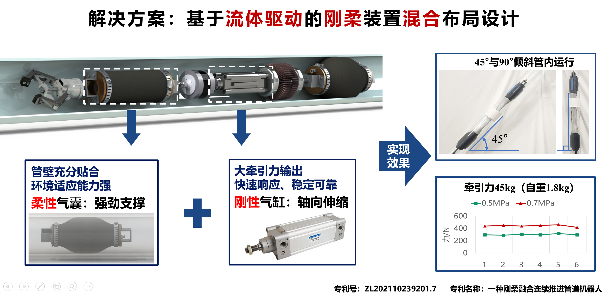
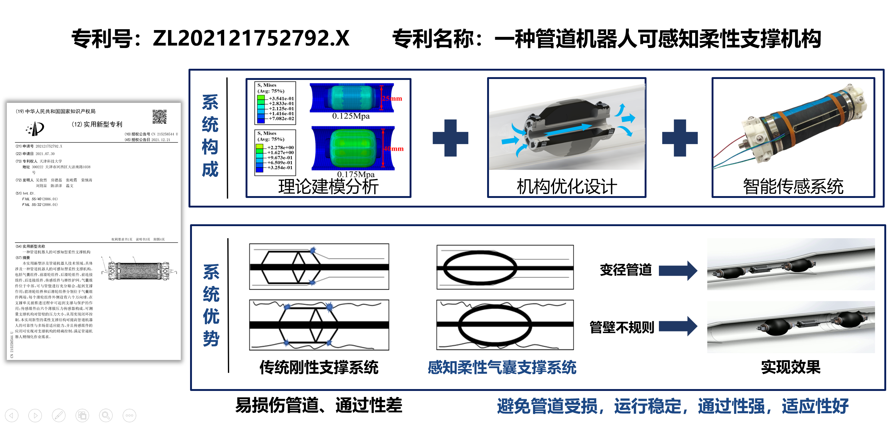
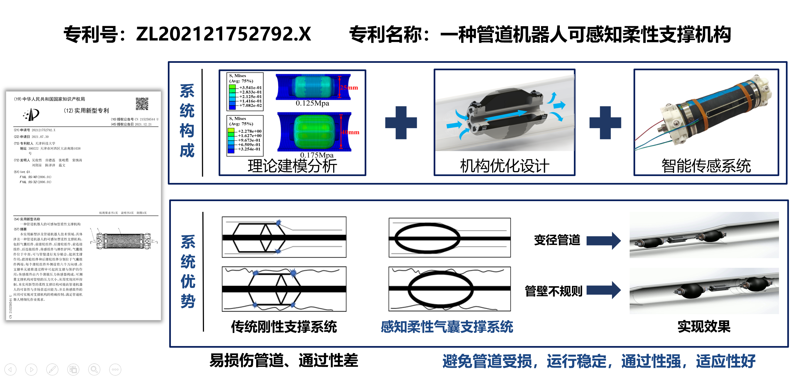
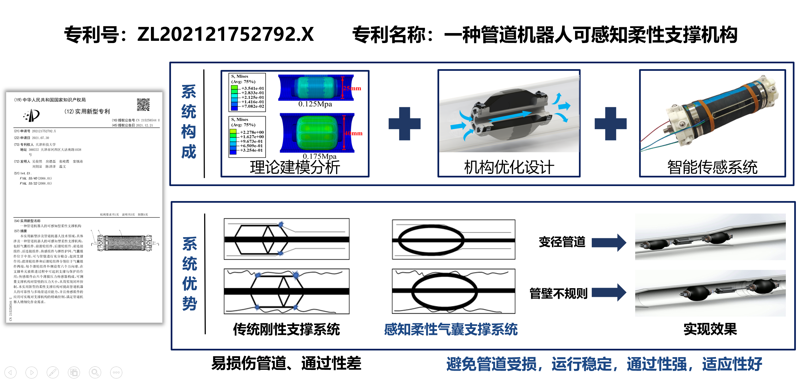

项目展示
以下是我的主要科研项目及成果展示，包含项目背景、技术内容和实物展示
轻量化电机直驱踝关节康复外骨骼系统开发
2024.12-2025.3 | 研究生课题对接西部多家医院需求，旨在设计兼具轻量化、功能性与用户友好性的踝关节康复外骨骼系统。
核心开发内容
硬件设计
- 选用高功率密度电机，采用碳纤维与尼龙材质，实现整机重量仅600g的可穿戴步行助力外骨骼结构。
- 集成多模态生物信号采集模块：包含IMU、sEMG、FSR，支持实时生理数据采集。
- 人因工程优化：腿部护托高度可调，足托采用内衬于鞋内的适配方案，覆盖6岁以上群体穿戴需求。
软件开发
- 嵌入式系统：完成外骨骼电路设计与嵌入式软件开发，实现硬件设备的驱动与数据交互。
- 图形化康复平台：基于Ubuntu系统，采用Pygame框架开发康复训练软件，包含游戏化训练模块、账号管理系统和数据导出功能。
项目成果
- 申请发明专利1项，软件著作权1项；
- 实现轻量化机械结构与多模态传感器融合的硬件系统；
- 完成从硬件控制到康复软件的全链路开发，形成一体化康复解决方案;
- 已量产7套设备，分别在成都、青海和西藏等儿童康复科进行临床试用。
基于气压驱动的仿生柔性管道机器人研发
2021.1-2022.5 | 国家级大创针对现有管道机器人牵引力小、适应性弱、工作效率低及维护成本高等问题。本项目基于仿生蠕动机理，采用柔性驱动机构和模块化设计理念，设计出一种基于气压驱动的仿生柔性管道机器人系统。
承担工作
负责项目的方案设计；机器人研发上机构设计与力学仿真分析；气动系统搭建与测试；电控系统的搭建及机器人运动控制；比赛上答辩环节及参赛材料制作；协助导师撰写多篇论文与专利。
项目成果
- 研制工程样机2台；
- 申请专利3项(2项发明，1项实用新型)；
- 发表SCI二区论文1篇；
- “挑战杯”课外学术科技作品竞赛全国一等奖、中美青年创客大赛总决赛全国一等奖等诸多奖项。

 

